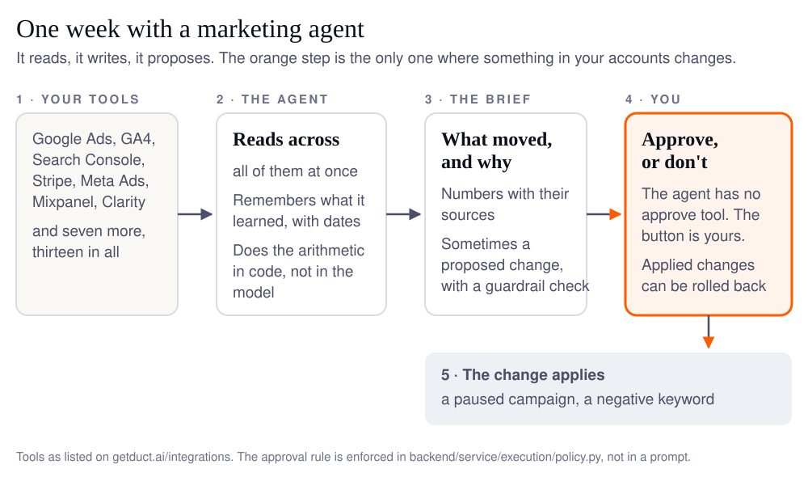

An AI agent for marketing is software that reads your marketing tools, decides what to look at next, writes up what it found, and proposes changes that you approve. It differs from the automations you already run because it chooses its own steps, and from a chatbot because it reads your real data and can act on it. The jobs it fits are the ones that take you a morning each week; the jobs it must never do alone are the ones that spend or delete.
I built one. Duct is an open-source agent that reads Google Ads, GA4, Search Console, Stripe and nine other tools together, and it exists because I was bad at the Monday report and did not enjoy it (I leave it to you to guess which came first). Since March, 739 of the 1,427 commits on its main branch carry a coding agent's name beside mine. So this guide is written from inside: what works, what costs what, and what I would not let an agent do with my own accounts.
Each section below is the short answer to one question, with a link to the full guide on it. If you only read one, read the one on approval.
What does an AI agent for marketing actually do?
It does the reading you do by hand, across every tool at once, and writes down what moved and why. The pages that rank for this question are vendor guides. Salesforce's says "AI agents for marketing are advanced, specialized software systems that automate and execute a variety of marketing tasks", and lists campaign activation and segmentation at enterprise scale. Braze's agentic AI examples are a streaming service, a bank and a sports broadcaster. None of them describes a two-person team's week, and none of them names a cost.
Here is the week, as it runs on a shipping agent:

The thirteen tools in the first box are the ones Duct reads today, from the integrations page. The work in the second box is the part a dashboard cannot do: a dashboard shows one tool; the agent holds Google Ads next to Stripe next to GA4 and asks why the numbers disagree. In the seven agent examples for marketing guide, each job is listed with the tools it reads, what it produces and what it is allowed to change.
Is this different from the automation I already have?
Yes, and the difference is one sentence: an automation follows the steps you wrote; an agent chooses its next step from what it just read. A Zapier flow that posts a Slack message when a form is filled is an automation. A chatbot answers from what you type. An agent reads your Search Console, notices a page lost impressions, opens GA4 to see whether the sessions went with them, and then checks whether you shipped anything that week.
The three-question test from the agent vs chatbot vs automation guide: does it choose its own next step, does it read more than one source, and can it change something? Two or three yeses is an agent. The guide walks one job, the weekly growth report, through all three forms, and shows the line of code where "agent" ends and "automation" begins. Most teams need an agent for the reading and an automation for the routine, and the mistake is buying the first to do the second.
Which marketing jobs should an agent do, and which should it not?
Give it the jobs that are reading and comparing; keep the jobs that are spending and deleting behind your own click. This is the decision I make for every job before Duct gets it, and it is the decision table I would want from any vendor:
| The job | Agent | Automation | By hand | Why |
|---|---|---|---|---|
| The Monday read of ads, analytics and billing | ✓ | three tools, one question, and the answer changes every week | ||
| "Why did signups drop last week" | ✓ | the cause is in a tool you did not think to open | ||
| Keyword gap from Search Console | ✓ | a comparison that is tedious by hand and needs judgement about intent | ||
| Pausing a campaign at a spend cap | ✓ | a fixed rule; an agent adds nothing but latency | ||
| Posting the weekly numbers to Slack | ✓ | once the brief exists, delivery is a pipe | ||
| Changing a bid, a budget or an audience | proposes | approves | reversible, but it spends money; a person signs | |
| Deleting an audience, an event or a campaign | proposes | approves | not reversible; no setting should ever let this auto-apply | |
| Deciding what the quarter's goal is | ✓ | an agent can brief the decision, it cannot own it |
The last three rows are the whole argument of the human in the loop guide. Braze puts it well in the article above: "Building in human checkpoints and audit trails is what allows teams to move fast with confidence." The guide goes further than a checkpoint: it shows a gate that is enforced by the absence of a tool. In Duct there is no approve or apply tool in the list the model can call, so the model cannot be talked into approving its own proposal, and the rule lives in one policy file rather than in a prompt that asks nicely.
What does a week with an agent look like?
One request on Monday morning, a brief back in a few minutes, and one or two proposed changes waiting for a decision. The agentic workflow guide walks the six steps of Duct's weekly brief, trigger, gather, compare, check, write, approve, and names who decides each one. The trigger is still you, or a cron job you set up: Duct has an unattended entry point for the brief, and nothing in the product schedules it yet, which is the first limit the guide admits. The step worth knowing about is the one that moved out of the model. Replaying a real brief, the model reasoned correctly and then added wrong: 2,504 sessions where its own rows summed to 2,681. Totals, rates and subtotals are now computed in code and handed to the model (#238), which is the practical form of a rule I now apply to every agent: let the model decide, never let it count.
A second thing the week needs is memory with dates. Budgets change, campaigns pause, pages redirect, and an agent that remembers "campaign enabled" from ninety days ago and asserts it today is worse than one that remembers nothing. The TEPA paper measured it: append-only memory scored 0.210, no memory 0.309, memory that revokes stale facts 0.950. Duct shows the age of every remembered fact and re-reads the source before stating an old one as current.
Where does my data go, and who sees it?
Through the model you chose, under your own key, and into whatever the agent's vendor stores; ask every vendor those three questions and expect three straight answers. The local AI agents guide is the one I was most nervous to write, because the honest answer about my own product is in two halves. The Duct you download is a thin desktop shell that talks to the hosted service: your projects and your tool connections live there, encrypted, and the shell loads a hosted web app. What stays on your machine is the model key, in the operating system's keychain, sent with a request only when a job runs. The self-host build runs the whole backend on your laptop with a local database and nothing leaving the machine, and almost nobody runs it. Both are true; a product page that says only the second is lying by selection.
The guide has the same table for cloud agents, self-hosted agents and desktop agents with your own key, so you can place any product on it in a minute.
Do I need "agentic AI", or just an agent?
Just an agent, for almost every marketing job; "agentic" is the word for a system of several agents that plan and check each other, and it costs more per run. Workday, Domo and a dozen others have written the agents vs agentic AI comparison in the abstract. The guide does it on a product that is both: Duct's insights agent runs alone for most of a brief, and hands its data to a second, cheaper verifier agent, which checks the numbers before the first one recommends anything. The guide says what the verifier checks, what it cannot yet measure, and what to ask in a demo so that "agentic" on a slide turns into a number you can check.
What does it cost to run?
Cents per brief on a cheap model, dollars on an expensive one, and the model bill is yours either way. Duct is free during its beta and brings no model of its own: you give it your own API key (Google, Anthropic, OpenAI, OpenRouter or xAI), and every job is routed to one of three rungs, heavy, standard and light, so that a memory note does not run on the model you reserve for the hard question.
The one number I can stand behind is measured, not estimated. Duct's eval gate runs the weekly brief against a synthetic account before any change to the agent merges, and records the cost:
| What | Model | Median cost per run | Model calls | Recorded |
|---|---|---|---|---|
One weekly brief, the eval case solo-organic-slip | DeepSeek V4 Flash via OpenRouter | $0.0052 | 4 | 18 trials, Sep 30 2026 |
The source is the eval baselines file in the repository. The honest half of the row is the column it leaves out: that case passes its own checks 77.8% of the time on that model, which is why the cheapest rung is for memory and recaps, not for the brief you act on. On the default Gemini ladder a brief runs on Flash, and I do not yet have a published baseline for it, so I will not quote one. The harness engineering post has the wider point: the cheaper the model, the more the code around it decides the result.
How do I start, this afternoon?
Connect two tools, ask one question you already know the answer to, and read what comes back before you trust it with a question you don't. In order:
- Pick the job from the table above that costs you the most time. For most teams it is the Monday read.
- Connect the two tools that job reads first, not all thirteen. Search Console and GA4 for organic; Google Ads and Stripe for paid.
- Ask a question whose answer you know. "Why did organic sessions drop in the second week of September?" when you remember the redirect. If the agent finds the redirect, it has earned the next question.
- Read one proposed change without approving it. Check that the preview says exactly what will change and that there is a way back.
- Make it the Monday habit, a request or a cron job, and spend the morning it gives back on the row of the table that says "by hand".
Download Duct does the first three in about ten minutes, and the open-source build is the same code if you would rather read it first.
What an agent cannot do yet
It cannot tell you whether the change it proposed worked, and it does not learn from a rejection. Both are open issues in Duct's tracker, not features in a deck. "Did it work?", a verdict on every applied change, is #243; rejecting a change with a reason so the agent stops proposing it is #241; and a HubSpot connector is still a placeholder (#320). I would rather you read the gaps here than find them in week two. Oh, and the Japanese version of this site was translated by a machine, and it shows.
FAQ
What is an AI agent for marketing?
Software that reads your marketing tools, decides for itself what to look at next, writes up what it found, and proposes changes for a person to approve. It differs from an automation, which follows fixed steps, and from a chatbot, which answers from what you type rather than from your data.
Can an AI agent change my Google Ads account?
It should only propose. In a well-built agent the change is staged with a preview, a guardrail check and a rollback, and a person presses Apply. Ask any vendor whether the agent has an approve tool it can call itself; if the answer is yes, the gate is a prompt, not a rule.
How much does an AI marketing agent cost to run?
The model bill is the main cost. One measured weekly brief cost a median of $0.0052 on DeepSeek V4 Flash across 18 trials, with 4 model calls each. A frontier model costs tens of times more per run. The agent's own price is separate; Duct is free during its beta and uses your API key.
Where does my marketing data go when an agent reads it?
Through the model provider you chose, under your key, and into whatever the vendor stores. For Duct's downloadable app that is a hosted service holding your projects and encrypted tool connections, with your model key kept in your operating system's keychain. The self-host build keeps everything on your machine.
What should I ask a vendor before buying an AI agent for marketing?
Which tools it reads together, not one at a time. What it can change without a click. Whether the approval is enforced in code or asked for in a prompt. What one run costs on your own model. And whether it tells you, afterwards, if the change worked.